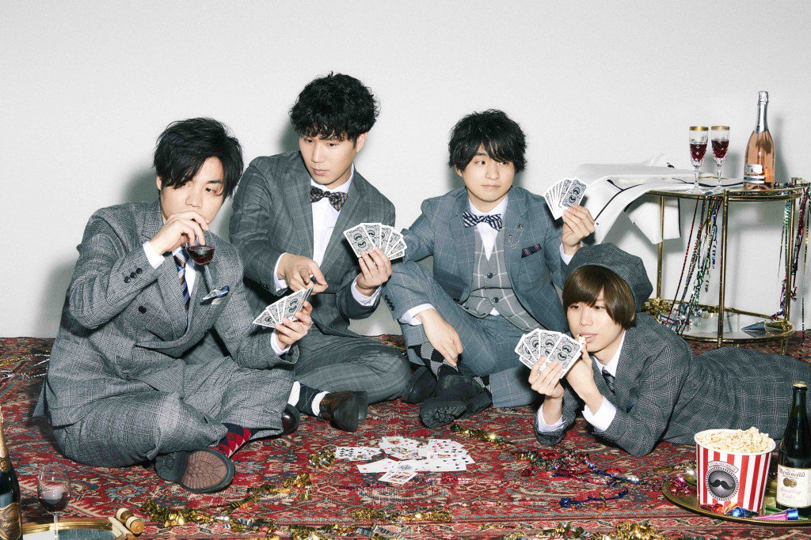

Offical髭男dismとは

2012年結成、2015年4月に1stミニアルバム「ラブとピースは君の中」をリリースし、デビューする。
2018年4月にMajor 1st Single「ノーダウト」でメジャーデビューを果たした。
[L→R]Ba/Sax:楢﨑誠 Drs:松浦匡希 Vo/Pf:藤原聡 Gt:小笹大輔

2012年結成、2015年4月に1stミニアルバム「ラブとピースは君の中」をリリースし、デビューする。
2018年4月にMajor 1st Single「ノーダウト」でメジャーデビューを果たした。
[L→R]Ba/Sax:楢﨑誠 Drs:松浦匡希 Vo/Pf:藤原聡 Gt:小笹大輔